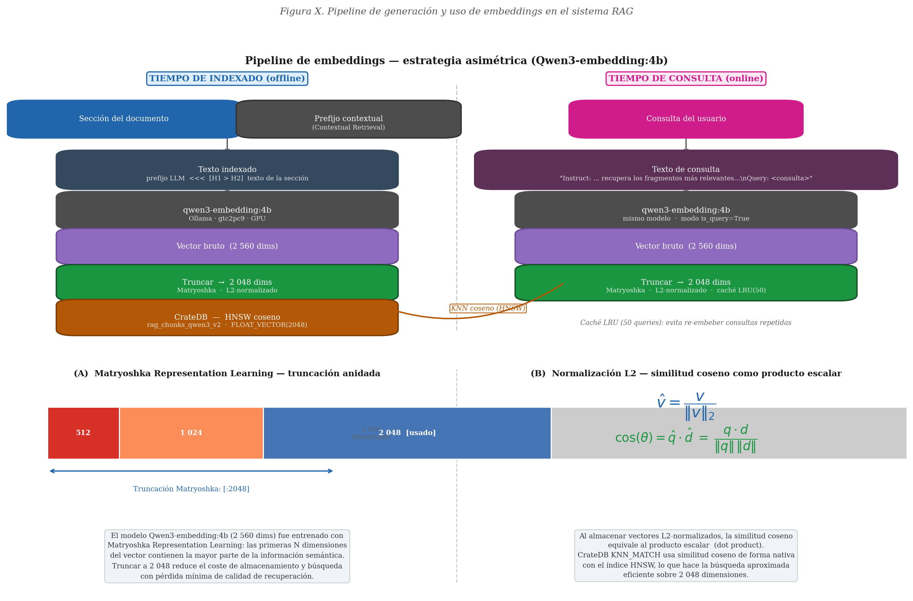

Un sistema que responde preguntas de profesionales sanitarios citando los procedimientos oficiales de su hospital. Estas páginas recogen los seis experimentos con que se evaluó, con los datos crudos que los sostienen, para que cualquiera pueda comprobar las cifras de la memoria en vez de fiarse de ellas.
Cifras leídas de los propios ficheros del repositorio.
Cada uno se abre con su enunciado, su diseño, sus resultados y los ficheros que los respaldan. Estas son las direcciones que se citan desde la memoria.
¿Recupera la sección correcta cuando la consulta se dirige a un protocolo concreto, y cuánto se pierde con un modelo de embedding más pequeño?
0,932 de acierto entre los cinco primeros
Lo mismo, pero saltando entre protocolos dentro de una conversación con memoria: el escenario realista.
0,855 en el escenario realista
¿Reconoce lo que cae fuera de su corpus y lo dice, en vez de contestar con lo más parecido que encuentre?
97,4 % de acierto de intención
¿Se apoya la respuesta en el texto recuperado y cita fuentes que existen? Reproducible sin instalar nada.
se reproduce entero sin instalar nada
¿Cuántos profesionales simultáneos aguanta, con qué motor de inferencia y a partir de dónde la latencia deja de ser aceptable?
609 barridos en 2 máquinas
¿Cuánto cuesta sostenerlo en infraestructura propia y a partir de qué volumen sale a cuenta frente a una API comercial?
20,28 kWh medidos
Acierto en los cinco primeros resultados: fracción de preguntas cuya sección de respuesta aparece entre los cinco fragmentos mejor puntuados. En verde, la mejor estrategia de cada fila.
| Escenario | Modelo de embedding | n | Cross-encoder | Híbrida | RRF puro |
|---|---|---|---|---|---|
| Por documento | Qwen3-Embedding 4B | 1.845 | 0,932 | 0,898 | 0,883 |
| Por documento | Qwen3-Embedding 0.6B | 1.845 | 0,919 | 0,859 | 0,854 |
| Multi-documento | Qwen3-Embedding 4B | 330 | 0,855 | 0,846 | 0,827 |
| Multi-documento | Qwen3-Embedding 0.6B | 330 | 0,827 | 0,746 | 0,746 |

Los documentos del hospital no se redistribuyen, así que las métricas de recuperación no pueden recalcularse desde cero aquí: la etiqueta de relevancia se decide contra el texto completo de la sección, que vive en la base de datos. Y ninguna de las medidas de calidad de respuesta juzga la corrección clínica: miden solapamiento léxico, no verdad médica.
Qué sí puede verificarse, y con qué comando, está en Reproducir.